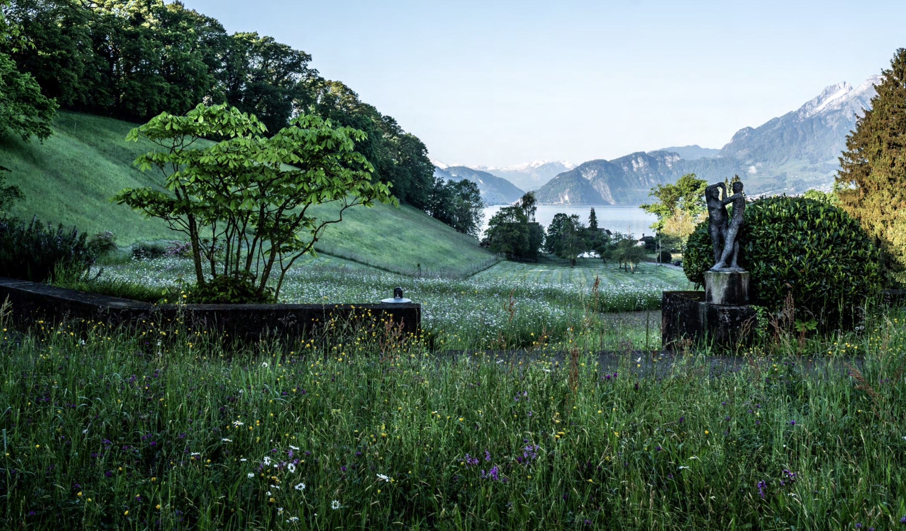
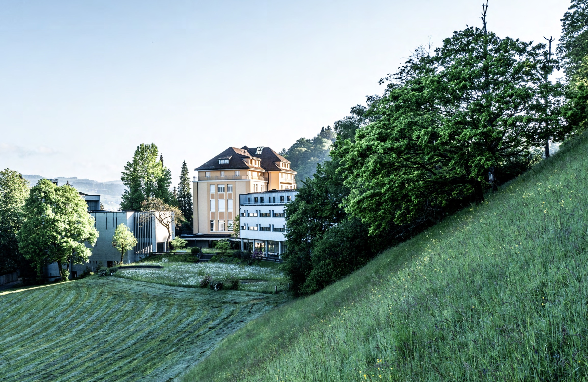
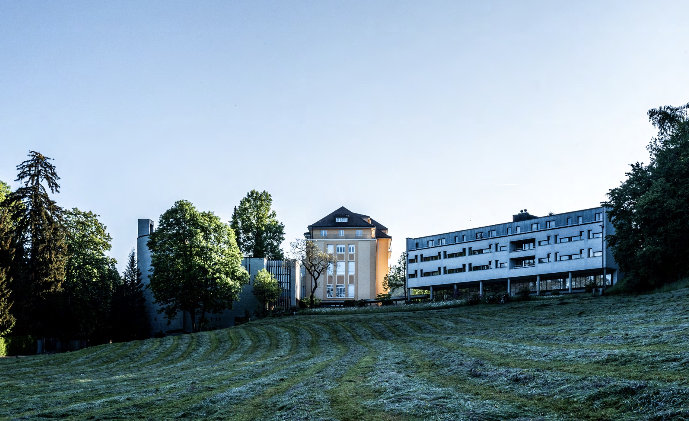
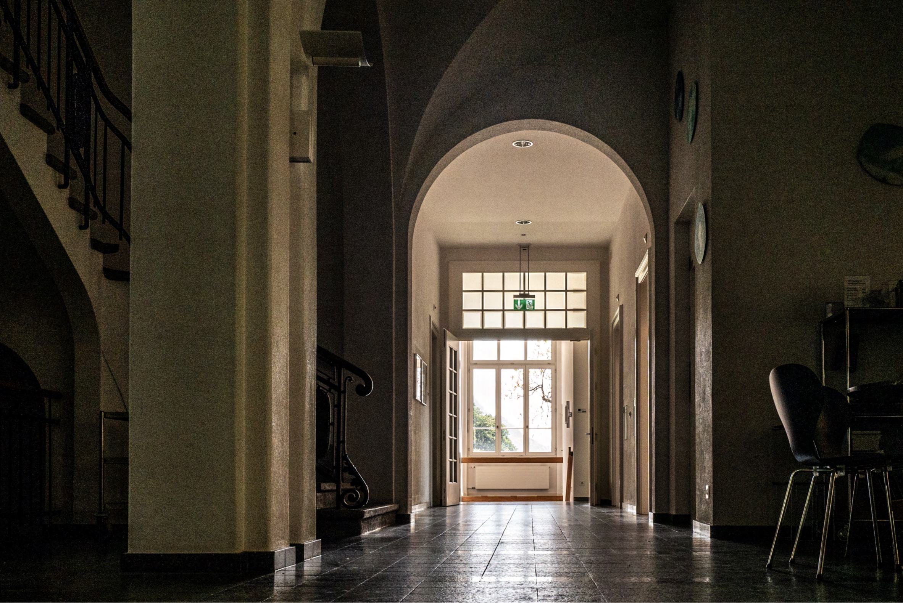
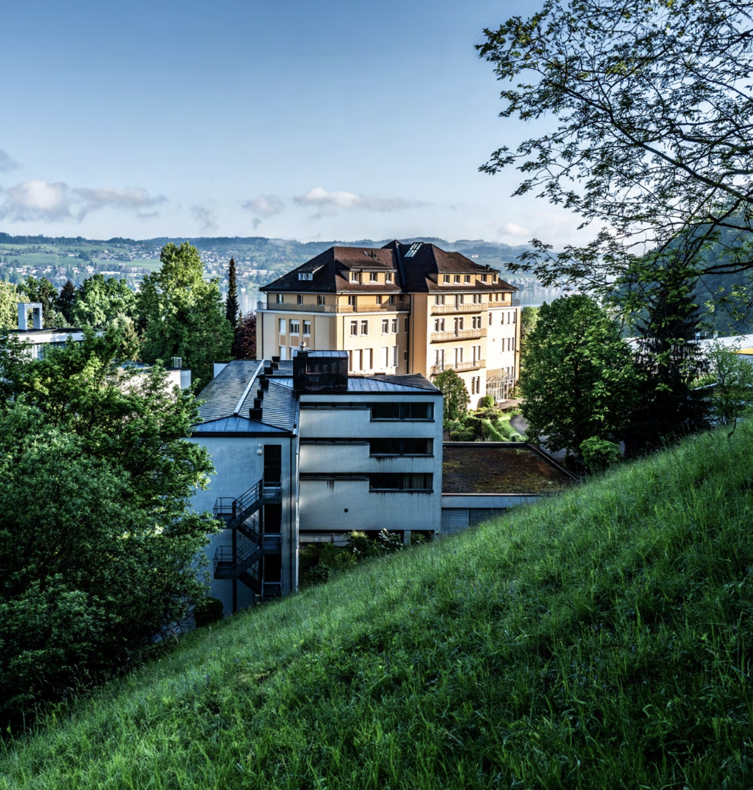
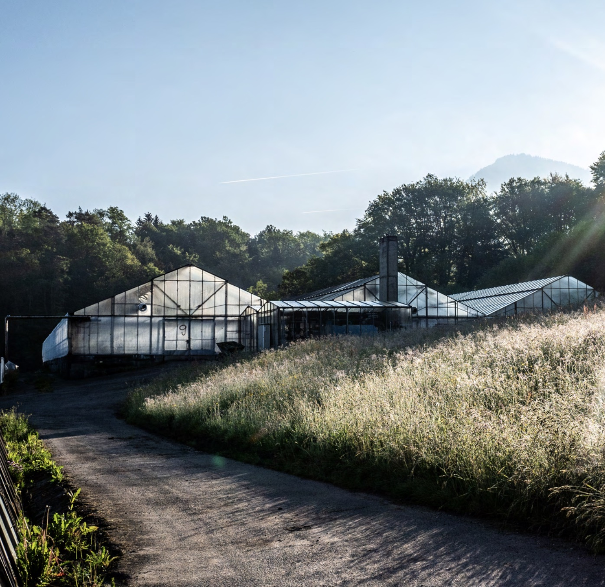
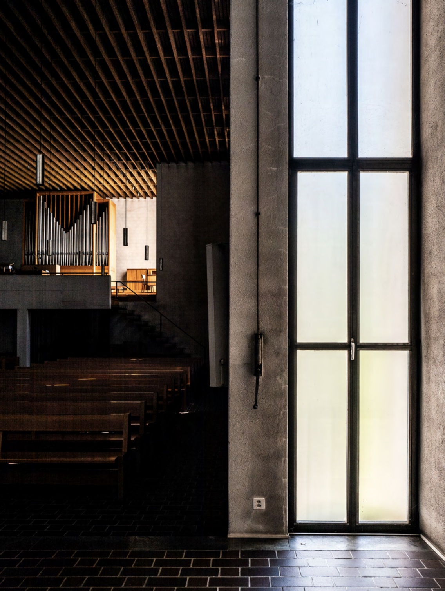
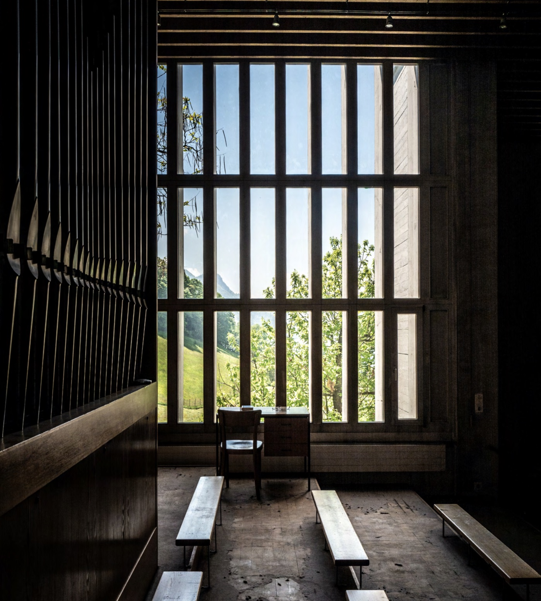
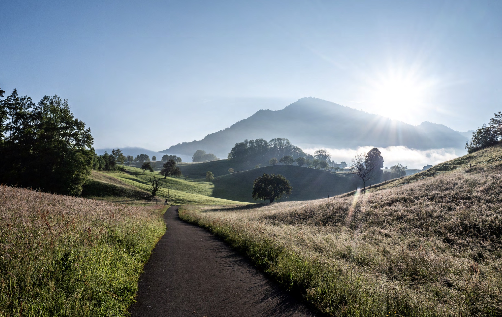
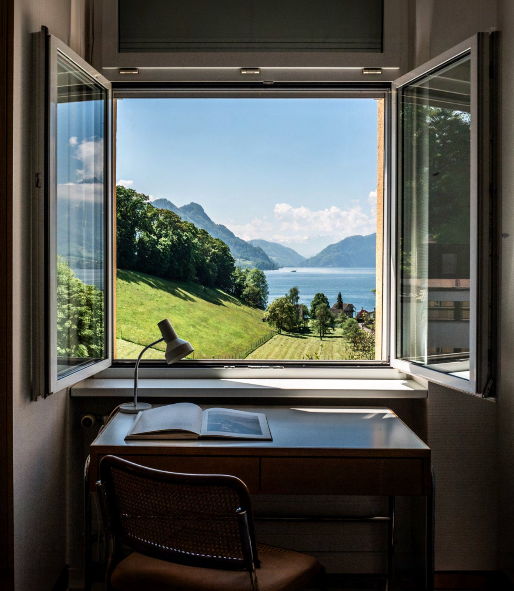

Stella occupies a former convent and girls’ school in Hertenstein, on a quiet peninsula on Lake Lucerne. For two centuries it was in the care of the Sisters of Baldegg, who founded the region’s first school for girls, pioneered international charity work, and built a modernist convent with Marcel Breuer. They understood that a new way of thinking requires a new way of living together; we inherit that understanding along with their house. The site has private lakefront access, a permaculture garden maintained by the local community, two large kitchens, and a mix of classrooms, small study rooms, over 70 bedrooms, and large presentation spaces. We began making it our own this summer, when we hosted 150 people for our inaugural gathering.









